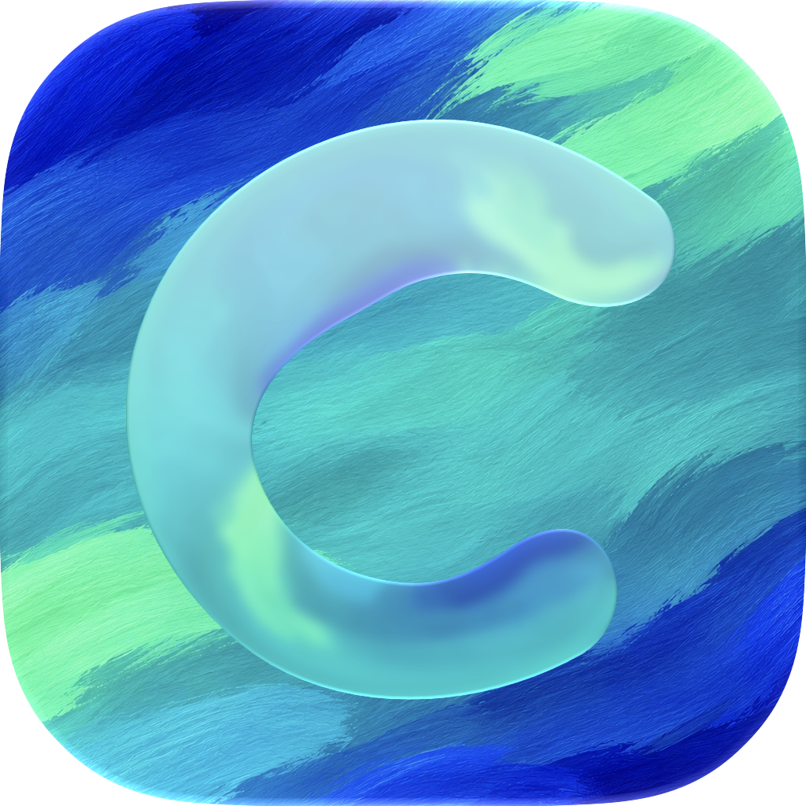
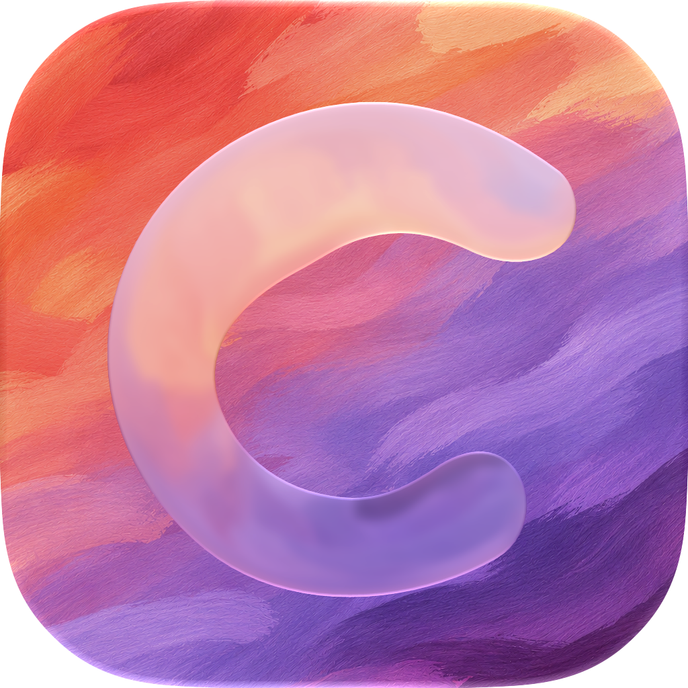
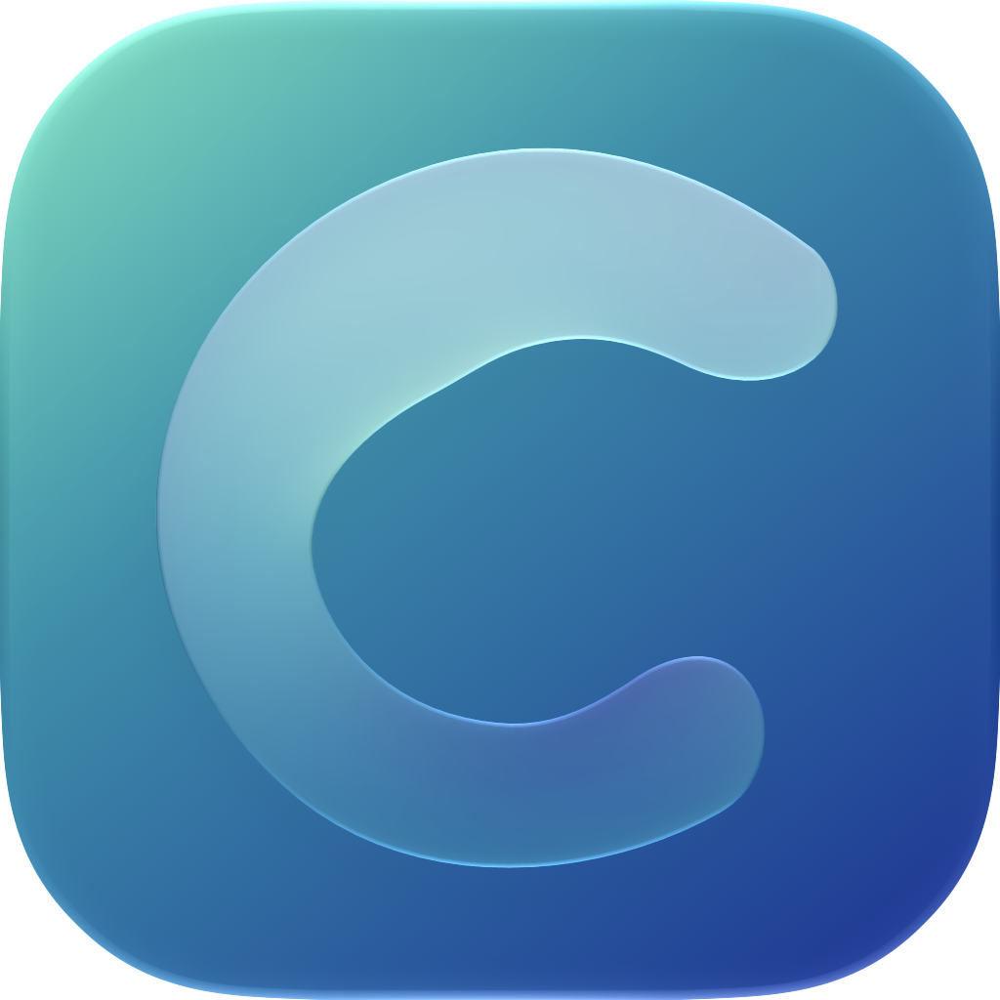

1. Sea glass
Original teal paint, clearer C.

Four new color studies. The C now lets the background color through, with refraction and a light-catching edge. These are native Icon Composer renders.
Original teal paint, clearer C.

Rich blue paint with fresh green strokes.

Warm peach, coral, lavender, and plum.
Full-size preview
A stronger mint-to-blue gradient.
Full-size previewCompare the same silhouette with the original white fill. The installed icon remains Tidal until you choose a new version.

Solid teal and an opaque white C.

The current app icon.

Original paint with the more opaque C.